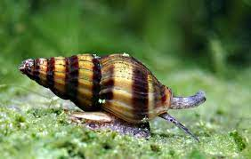
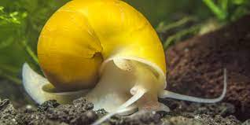
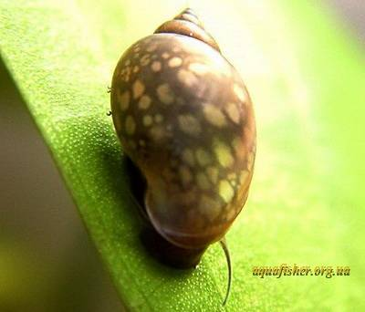

Nuestro objetivo como tienda es proporcionar información precisa y especializada, así como suministrar el equipo necesario para garantizar una óptima calidad de vida para los fascinantes peces conocidos como Betta
el caracol asesino es conocido como un controlador de poblacion de caracoles en la acuariofilia debido a que esta especie es canibal y disfruta alimentarse de otros caracoles
Una de las especies mas famosas en la acuariofilia debido a su aspecto y la capacidad de controlar su reproduccion debido a que estos caracoles,no son hemafroditas
Una de las especies mas comunes en la acuariofilia debido a que se reproducen con muchisima facilidad sus huevos se pueden hayar en las plantas que compremos para nuestro acuario,debido a estos se les considera una plaga
